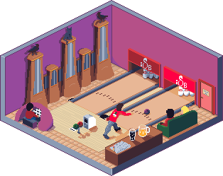
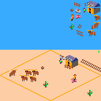
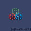
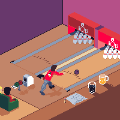
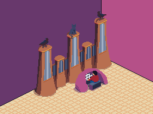

I learned about the pixel artist Sascha Naderer's
#Chickenstreet project last year. Immediately I knew I wanted to make an
entry.

My entry to #Chickenstreet.
Since the idea behind the Chickenstreet project is that we are filling out
the basement floors to Mr. Wong's
Soup'Partments, I wanted my art to show what I would most want in a dream
basement: a bowling alley and
pipe
organ.
The trouble with my dream was I had never drawn isometric pixel art before.
I practiced with some smaller scenes over the course of 9 months to improve my
skills.

An isometric PICO-8 cowboy game mockup.

Practice artwork based on
Saint 11's
shiny tutorial.
Posted on Twitter.
After a few months of practice, I started working on scenes that I knew I
wanted to include in the final #Chickenstreet submission.

A bowling alley: a requirement for the dream basement.
Posted on Twitter,
also as a card in Who Goes First.

No underground lair is complete without a pipe organ.
Posted on Twitter,
also on Mastodon.
After completing both of these, it took me about a month to assemble into the
final piece. Total time wasn't nearly as much, since I'm working full time and
only worked on this on average 15 minutes a day. Still, this was the largest
pixel art project I have ever done. I'm super happy with the result, but know
that I have a lot still to learn in making pixel art and isometric art.